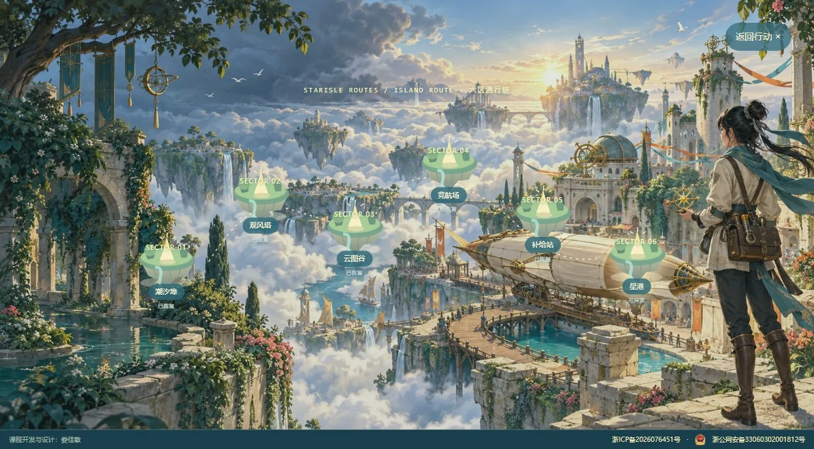

Game-based learning
Starisle Routes
I built Starisle Routes for Database Systems. Its six levels give students practice classifying constraints, modeling relationships, checking database writes, and assembling SQL. The screenshots document the original classroom game. The interactive exercise below is an English adaptation of one SQL puzzle.

Tidehaven
Swap adjacent tiles to match three instances of the same rule. In the sample schema, a duplicate primary key violates uniqueness, and a negative price violates the rule that prices must be nonnegative.
Windsong Tower
Route each request to the layer it changes. Defining a customer–order relationship changes the conceptual schema. Changing the file layout affects the internal schema.
Cloud Atlas
Two students and three courses yield six candidate pairs. Read the enrollment evidence and select the three pairs that belong in the relation.
Sky Trial
Each employee belongs to one department. Play entity, relationship, and cardinality cards in sequence to express that rule and advance the airship.
Waystation
Decide which cargo records to accept, reject, or complete with a default. For a rejected record, identify the constraint it violates.
Starport
Choose and order SQL fragments to create a database and select it. Later repairs add tables, keys, and constraints before the final manifest can be read.
Try a Starport puzzle in English
Build the order manifest
An order may contain several products. Assemble the table so that each product appears only once per order.